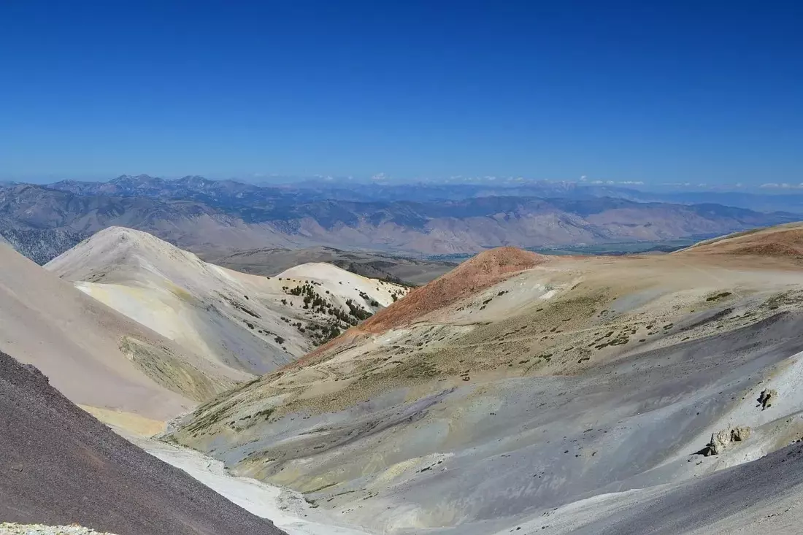
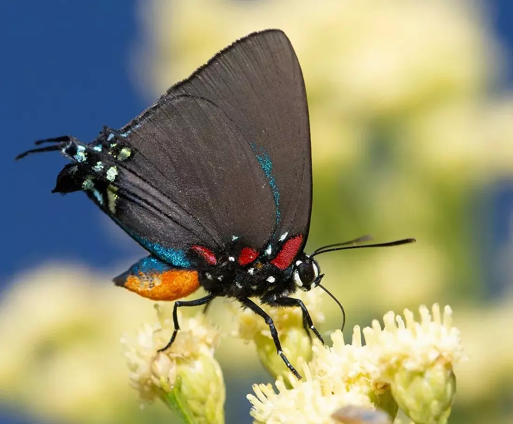
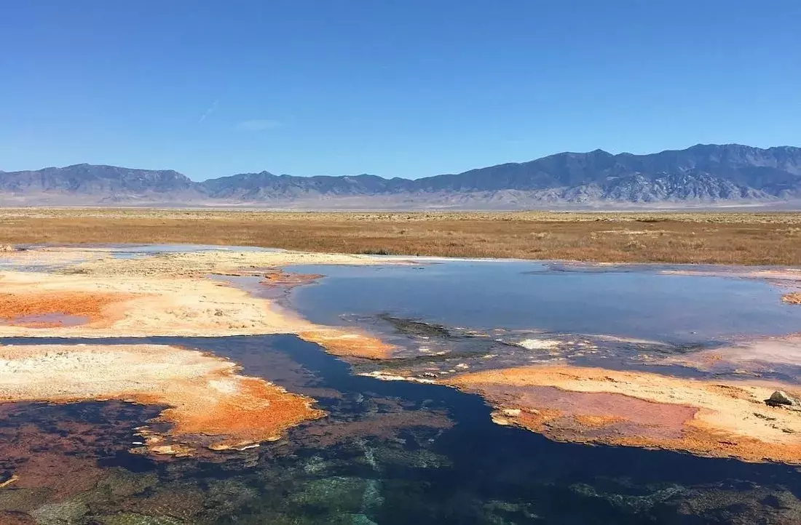
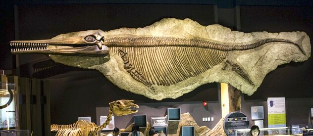
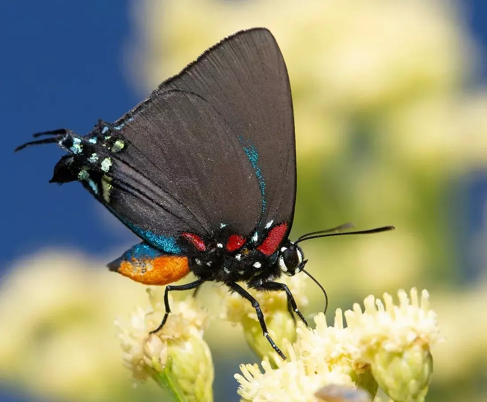
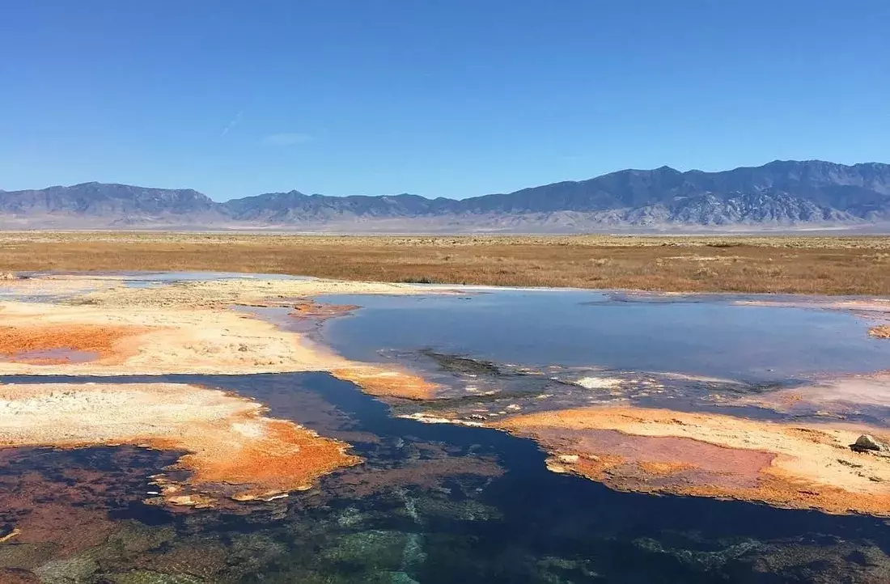
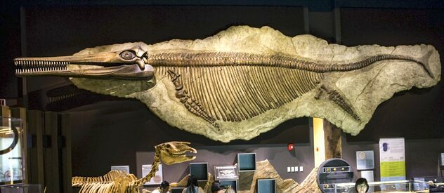
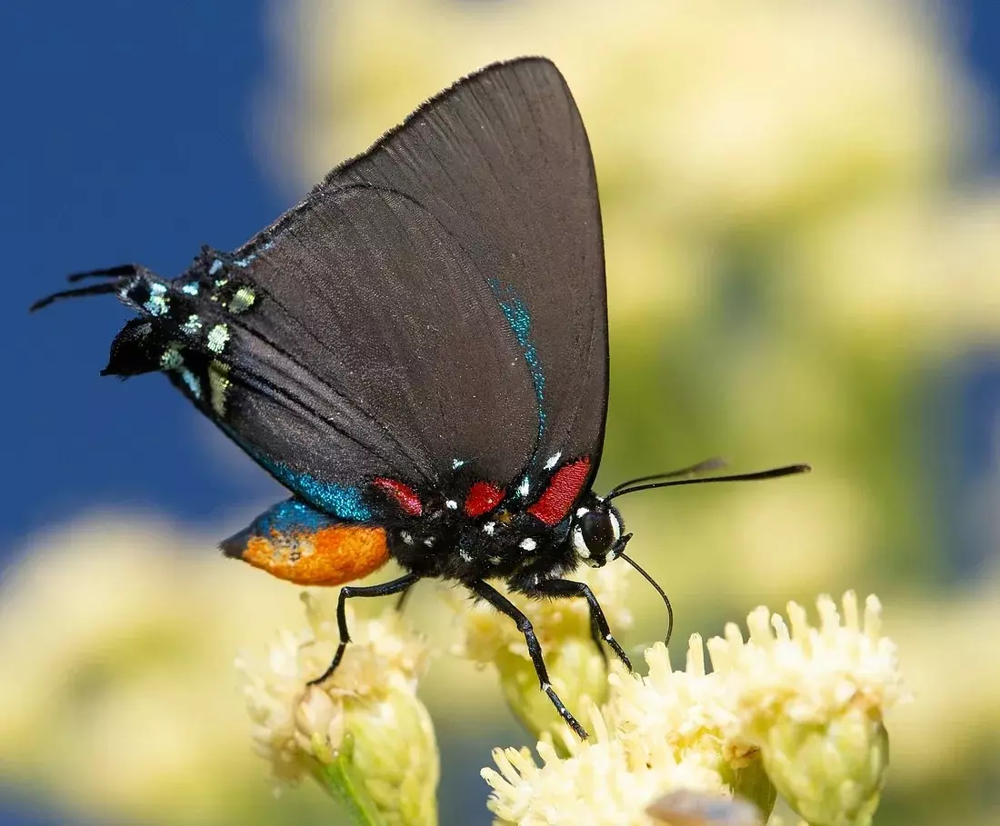
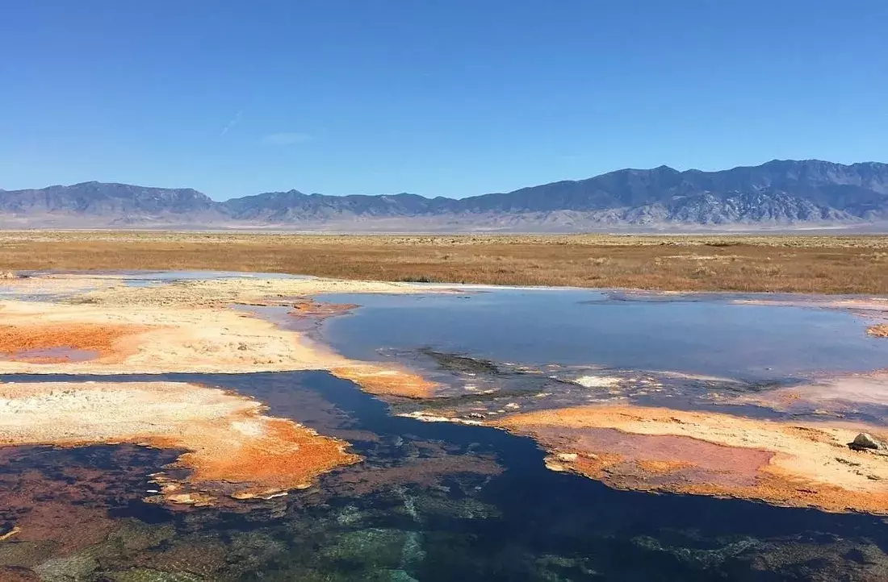
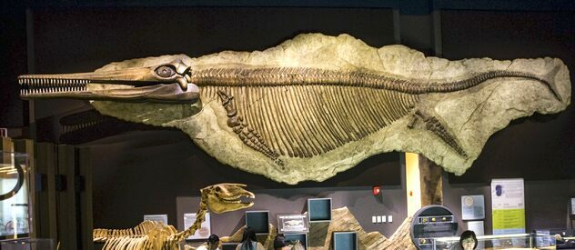

 








- Nevada has 314 named mountain ranges — more mountain ranges than any other state — and 35 peaks over 10,000 feet in elevation. Because of the dramatic geography, the state has many pockets of unique habitat for plants and wildlife to call home.
- Nevada ranks 8th for the number of butterflies found in a single state.
- Nevada has 309 species which are not found anywhere else, including desert fish like the Devil’s hole pupfish and desert dace, a variety springsnails and amphibians like the adorable Dixie Valley toad.
- With over 300 hot springs, Nevada is home to more hot springs than any other state in the nation.
- 15 of the top 25 largest hotels in the world reside in Las Vegas.
- The state is home to the Berlin-Ichthyosaur Park, the only place with a complete skeleton of an ichthyosaur, an extinct marine reptile.